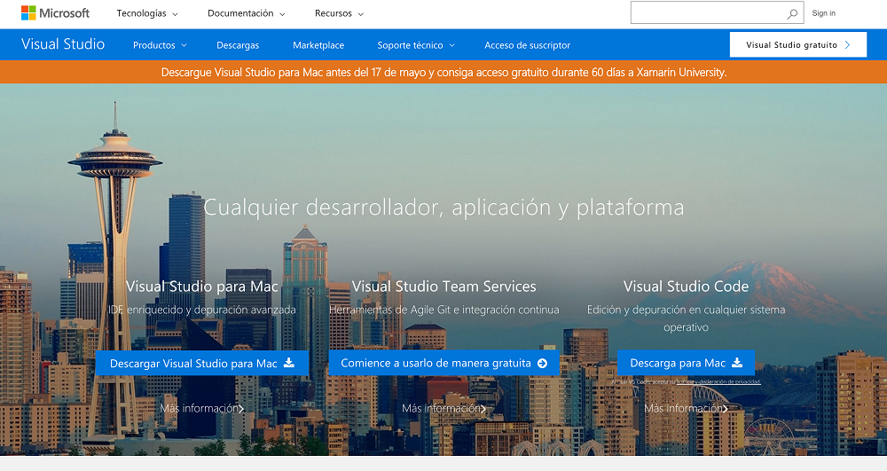
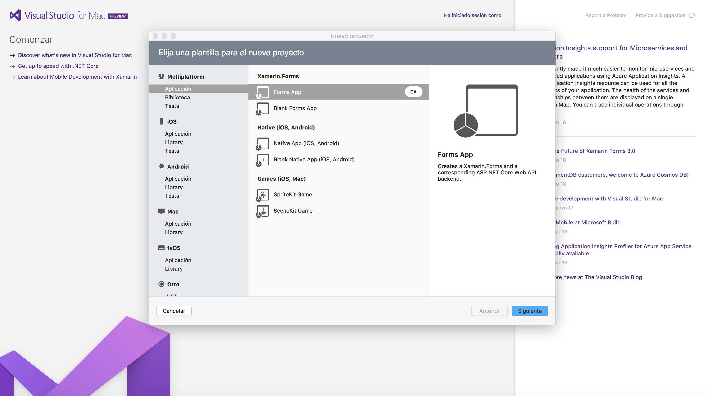
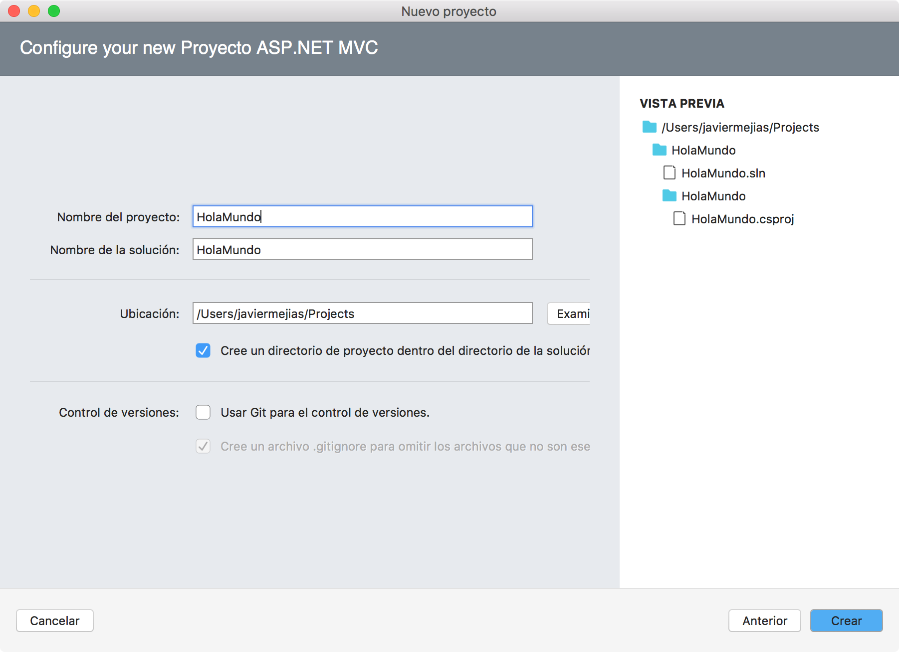
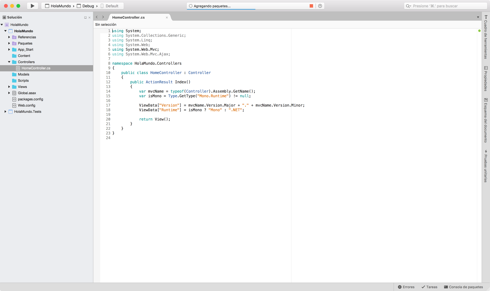

2.3.1.- Visual Studio.
Microsoft Visual Studio es un entorno de desarrollo integrado, elaborado por Microsoft y que está disponible para los sistemas operativos Microsoft Windows y Mac Os. Soporta múltiples lenguajes de programación como C++, C#, Java, Visual Basic .net, Php y Python. A partir de la versión 2005, Microsoft comenzó a ofrecer la versión gratuita Express, que con la versión 2017 ha pasado a llamarse Visual Studio Community.
Microsoft Visual Studio está pensado para desarrollar aplicaciones para Android, iOS, Mac, Windows y la web. Además del editor de código que nos permite navegar por el código, escribirlo y modificarlo con facilidad, el IDE Microsoft Visual Studio, contiene herramientas para depurar y probar nuestro software.
El IDE de Visual Studio, podemos descargarla desde la página oficial del proyecto https://www.visualstudio.com/es/

Una vez hemos descargado el instalador del IDE Visual Studio, para Microsoft Windows o para MacOs, procedemos a su instalación. Nos preguntará que herramientas estamos interesados en instalar y para que plataformas querremos desarrollar software.

Una vez hemos seleccionado las plataformas en las que estamos desarrollados, junto con las herramientas que queremos instalar con el IDE, comenzará el proceso de instalación, que necesitará de conexión a internet para descargarse los componentes del IDE.

Una vez ha finalizado la instalación, ya tenemos listo nuestro entorno de desarrollo para comenzar a programar. Al iniciarlo, nos preguntará que tipo de proyecto queremos desarrollar.

Una vez hemos seleccionado el tipo de proyecto que queremos crear, el asistente de Visual studio nos preguntará aspectos básicos de nuestro proyecto, como el nombre del mismo.

Visual Studio nos creará la estructura básica de nuestro proyecto.

Además del IDE de Visual Studio, Microsoft ofrece desde la página de descargas, Visual Studio Code, que es un Entorno de desarrollo integrado que nos permite escribir código de forma sencilla e intuitiva en múltiples lenguajes de programación. Dicho IDE se descarga desde la página oficial de visualstudio y presenta un aspecto como el que podemos encontrar a continuación.